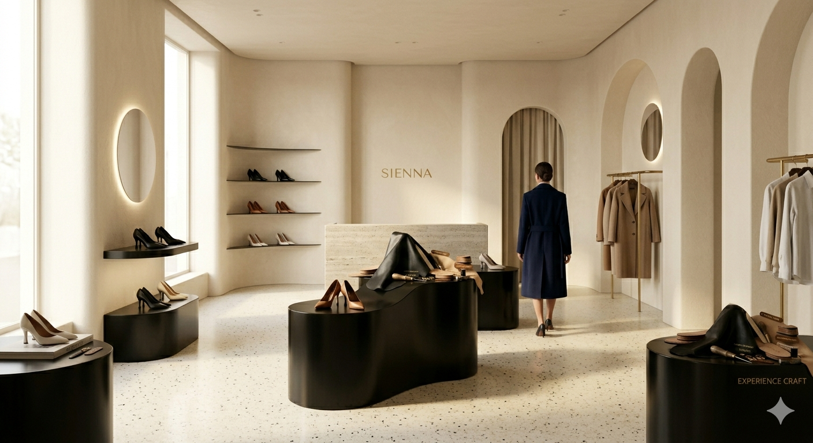

Pure
Classic
가장 완벽한 실루엣은 당신의 발걸음에서 완성됩니다.
Timeless Design,
Eternal Value.
유행을 타지 않는 디자인, 영원한 가치

Walking
with
sienna.
모두가 더 빠르고 화려한 것을 쫓을 때, sienna는 가장 본질적인 질문으로 돌아갔습니다.
우리는 단순히 유행을 선도하는 구두가 아닌, 당신의 하루를 단단하게 지탱해 줄 '신뢰의 오브제'를 만듭니다. 30년 넘게 가죽의 결을 읽어온 장인의 손길과 현대적인 조형미가 만나 탄생한 시에나의 라스트는, 마치 당신의 발을 처음부터 알고 있었던 것처럼 부드럽게 감싸 안습니다
가장 좋은 가죽은 시간이 흐를수록 당신의 발걸음을 닮아갑니다. 시에나가 엄선한 프리미엄 복스 카프와 천연 양피 내피는 신을수록 깊어지는 광택과 편안함을 선사하며, 보이지 않는 곳까지 세심하게 채워진 라텍스 쿠션은 도심 속 딱딱한 보도 위에서도 구름 위를 걷는 듯한 안정감을 제공합니다.
우아함은 드러내는 것이 아니라 스며드는 것입니다. 절제된 선과 완벽한 비율로 빚어낸 시에나와 함께, 당신의 평범한 일상을 특별한 예술적 경험으로 채워보세요.